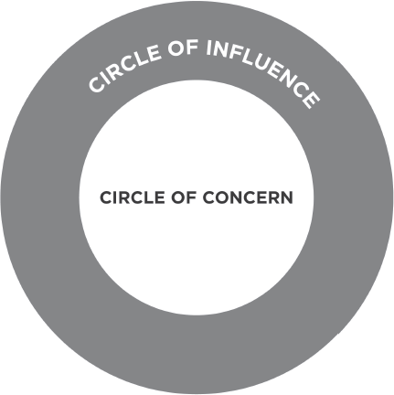

I know of no more encouraging fact than the unquestionable ability of man to elevate his life by conscious endeavor.
HENRY DAVID THOREAU
As you read this book, try to stand apart from yourself. Try to project your consciousness upward into a corner of the room and see yourself, in your mind’s eye, reading. Can you look at yourself almost as though you were someone else?
Now try something else. Think about the mood you are now in. Can you identify it? What are you feeling? How would you describe your present mental state?
Now think for a minute about how your mind is working. Is it quick and alert? Do you sense that you are torn between doing this mental exercise and evaluating the point to be made out of it?
Your ability to do what you just did is uniquely human. Animals do not possess this ability. We call it “self-awareness” or the ability to think about your very thought process. This is the reason why man has dominion over all things in the world and why he can make significant advances from generation to generation.
This is why we can evaluate and learn from others’ experiences as well as our own. This is also why we can make and break our habits.
We are not our feelings. We are not our moods. We are not even our thoughts. The very fact that we can think about these things separates us from them and from the animal world. Self-awareness enables us to stand apart and examine even the way we “see” ourselves—our self-paradigm, the most fundamental paradigm of effectiveness. It affects not only our attitudes and behaviors, but also how we see other people. It becomes our map of the basic nature of mankind.
In fact, until we take how we see ourselves (and how we see others) into account, we will be unable to understand how others see and feel about themselves and their world. Unaware, we will project our intentions on their behavior and call ourselves objective.
This significantly limits our personal potential and our ability to relate to others as well. But because of the unique human capacity of self-awareness, we can examine our paradigms to determine whether they are reality- or principle-based or if they are a function of conditioning and conditions.
THE SOCIAL MIRROR
If the only vision we have of ourselves comes from the social mirror—from the current social paradigm and from the opinions, perceptions, and paradigms of the people around us—our view of ourselves is like the reflection in the crazy mirror room at the carnival.
“You’re never on time.”
“Why can’t you ever keep things in order?”
“You must be an artist!”
“You eat like a horse!”
“I can’t believe you won!”
“This is so simple. Why can’t you understand?”
These visions are disjointed and out of proportion. They are often more projections than reflections, projecting the concerns and character weaknesses of people giving the input rather than accurately reflecting what we are.
The reflection of the current social paradigm tells us we are largely determined by conditioning and conditions. While we have acknowledged the tremendous power of conditioning in our lives, to say that we are determined by it, that we have no control over that influence, creates quite a different map.
There are actually three social maps—three theories of determinism widely accepted, independently or in combination, to explain the nature of man. Genetic determinism basically says your grandparents did it to you. That’s why you have such a temper. Your grandparents had short tempers and it’s in your DNA. It just goes through the generations and you inherited it. In addition, you’re Irish, and that’s the nature of Irish people.
Psychic determinism basically says your parents did it to you. Your upbringing, your childhood experience essentially laid out your personal tendencies and your character structure. That’s why you’re afraid to be in front of a group. It’s the way your parents brought you up. You feel terribly guilty if you make a mistake because you “remember” deep inside the emotional scripting when you were very vulnerable and tender and dependent. You “remember” the emotional punishment, the rejection, the comparison with somebody else when you didn’t perform as well as expected.
Environmental determinism basically says your boss is doing it to you—or your spouse, or that bratty teenager, or your economic situation, or national policies. Someone or something in your environment is responsible for your situation.
Each of these maps is based on the stimulus/response theory we most often think of in connection with Pavlov’s experiments with dogs. The basic idea is that we are conditioned to respond in a particular way to a particular stimulus.
How accurately and functionally do these deterministic maps describe the territory? How clearly do these mirrors reflect the true nature of man? Do they become self-fulfilling prophecies? Are they based on principles we can validate within ourselves?
BETWEEN STIMULUS AND RESPONSE
In answer to those questions, let me share with you the catalytic story of Victor Frankl.
Frankl was a determinist raised in the tradition of Freudian psychology, which postulates that whatever happens to you as a child shapes your character and personality and basically governs your whole life. The limits and parameters of your life are set, and, basically, you can’t do much about it.
Frankl was also a psychiatrist and a Jew. He was imprisoned in the death camps of Nazi Germany, where he experienced things that were so repugnant to our sense of decency that we shudder to even repeat them.
His parents, his brother, and his wife died in the camps or were sent to the gas ovens. Except for his sister, his entire family perished. Frankl himself suffered torture and innumerable indignities, never knowing from one moment to the next if his path would lead to the ovens or if he would be among the “saved” who would remove the bodies or shovel out the ashes of those so fated.
One day, naked and alone in a small room, he began to become aware of what he later called “the last of the human freedoms”—the freedom his Nazi captors could not take away. They could control his entire environment, they could do what they wanted to his body, but Victor Frankl himself was a self-aware being who could look as an observer at his very involvement. His basic identity was intact. He could decide within himself how all of this was going to affect him. Between what happened to him, or the stimulus, and his response to it, was his freedom or power to choose that response.
In the midst of his experiences, Frankl would project himself into different circumstances, such as lecturing to his students after his release from the death camps. He would describe himself in the classroom, in his mind’s eye, and give his students the lessons he was learning during his very torture.
Through a series of such disciplines—mental, emotional, and moral, principally using memory and imagination—he exercised his small, embryonic freedom until it grew larger and larger, until he had more freedom than his Nazi captors. They had more liberty, more options to choose from in their environment; but he had more freedom, more internal power to exercise his options. He became an inspiration to those around him, even to some of the guards. He helped others find meaning in their suffering and dignity in their prison existence.
In the midst of the most degrading circumstances imaginable, Frankl used the human endowment of self-awareness to discover a fundamental principle about the nature of man: Between stimulus and response, man has the freedom to choose.
Within the freedom to choose are those endowments that make us uniquely human. In addition to self-awareness, we have imagination—the ability to create in our minds beyond our present reality. We have conscience—a deep inner awareness of right and wrong, of the principles that govern our behavior, and a sense of the degree to which our thoughts and actions are in harmony with them. And we have independent will—the ability to act based on our self-awareness, free of all other influences.
Even the most intelligent animals have none of these endowments. To use a computer metaphor, they are programmed by instinct and/or training. They can be trained to be responsible, but they can’t take responsibility for that training; in other words, they can’t direct it. They can’t change the programming. They’re not even aware of it.
But because of our unique human endowments, we can write new programs for ourselves totally apart from our instincts and training. This is why an animal’s capacity is relatively limited and man’s is unlimited. But if we live like animals, out of our own instincts and conditioning and conditions, out of our collective memory, we too will be limited.
The deterministic paradigm comes primarily from the study of animals—rats, monkeys, pigeons, dogs—and neurotic and psychotic people. While this may meet certain criteria of some researchers because it seems measurable and predictable, the history of mankind and our own self-awareness tell us that this map doesn’t describe the territory at all!
Our unique human endowments lift us above the animal world. The extent to which we exercise and develop these endowments empowers us to fulfill our uniquely human potential. Between stimulus and response is our greatest power—the freedom to choose.
“PROACTIVITY” DEFINED
In discovering the basic principle of the nature of man, Frankl described an accurate self-map from which he began to develop the first and most basic habit of a highly effective person in any environment, the habit of proactivity.
While the word proactivity is now fairly common in management literature, it is a word you won’t find in most dictionaries. It means more than merely taking initiative. It means that as human beings, we are responsible for our own lives. Our behavior is a function of our decisions, not our conditions. We can subordinate feelings to values. We have the initiative and the responsibility to make things happen.
Look at the word responsibility—“response-ability”—the ability to choose your response. Highly proactive people recognize that responsibility. They do not blame circumstances, conditions, or conditioning for their behavior. Their behavior is a product of their own conscious choice, based on values, rather than a product of their conditions, based on feeling.
Because we are, by nature, proactive, if our lives are a function of conditioning and conditions, it is because we have, by conscious decision or by default, chosen to empower those things to control us.
In making such a choice, we become reactive. Reactive people are often affected by their physical environment. If the weather is good, they feel good. If it isn’t, it affects their attitude and their performance. Proactive people can carry their own weather with them. Whether it rains or shines makes no difference to them. They are value driven; and if their value is to produce good quality work, it isn’t a function of whether the weather is conducive to it or not.
Reactive people are also affected by their social environment, by the “social weather.” When people treat them well, they feel well; when people don’t, they become defensive or protective. Reactive people build their emotional lives around the behavior of others, empowering the weaknesses of other people to control them.
The ability to subordinate an impulse to a value is the essence of the proactive person. Reactive people are driven by feelings, by circumstances, by conditions, by their environment. Proactive people are driven by values—carefully thought about, selected and internalized values.
Proactive people are still influenced by external stimuli, whether physical, social, or psychological. But their response to the stimuli, conscious or unconscious, is a value-based choice or response.
As Eleanor Roosevelt observed, “No one can hurt you without your consent.” In the words of Gandhi, “They cannot take away our self respect if we do not give it to them.” It is our willing permission, our consent to what happens to us, that hurts us far more than what happens to us in the first place.
I admit this is very hard to accept emotionally, especially if we have had years and years of explaining our misery in the name of circumstance or someone else’s behavior. But until a person can say deeply and honestly, “I am what I am today because of the choices I made yesterday,” that person cannot say, “I choose otherwise.”
***
Once in Sacramento when I was speaking on the subject of proactivity, a woman in the audience stood up in the middle of my presentation and started talking excitedly. It was a large audience, and as a number of people turned to look at her, she suddenly became aware of what she was doing, grew embarrassed and sat back down. But she seemed to find it difficult to restrain herself and started talking to the people around her. She seemed so happy.
I could hardly wait for a break to find out what had happened. When it finally came, I immediately went to her and asked if she would be willing to share her experience.
“You just can’t imagine what’s happened to me!” she exclaimed. “I’m a full-time nurse to the most miserable, ungrateful man you can possibly imagine. Nothing I do is good enough for him. He never expresses appreciation; he hardly even acknowledges me. He constantly harps at me and finds fault with everything I do. This man has made my life miserable and I often take my frustration out on my family. The other nurses feel the same way. We almost pray for his demise.
“And for you to have the gall to stand up there and suggest that nothing can hurt me, that no one can hurt me without my consent, and that I have chosen my own emotional life of being miserable—well, there was just no way I could buy into that.
“But I kept thinking about it. I really went inside myself and began to ask, ‘Do I have the power to choose my response?’
“When I finally realized that I do have that power, when I swallowed that bitter pill and realized that I had chosen to be miserable, I also realized that I could choose not to be miserable.
“At that moment I stood up. I felt as though I was being let out of San Quentin. I wanted to yell to the whole world, ‘I am free! I am let out of prison! No longer am I going to be controlled by the treatment of some person.’”
***
It’s not what happens to us, but our response to what happens to us that hurts us. Of course, things can hurt us physically or economically and can cause sorrow. But our character, our basic identity, does not have to be hurt at all. In fact, our most difficult experiences become the crucibles that forge our character and develop the internal powers, the freedom to handle difficult circumstances in the future and to inspire others to do so as well.
Frankl is one of many who have been able to develop the personal freedom in difficult circumstances to lift and inspire others. The autobiographical accounts of Vietnam prisoners of war provide additional persuasive testimony of the transforming power of such personal freedom and the effect of the responsible use of that freedom on the prison culture and on the prisoners, both then and now.
We have all known individuals in very difficult circumstances, perhaps with a terminal illness or a severe physical handicap, who maintain magnificent emotional strength. How inspired we are by their integrity! Nothing has a greater, longer lasting impression upon another person than the awareness that someone has transcended suffering, has transcended circumstance, and is embodying and expressing a value that inspires and ennobles and lifts life.
***
One of the most inspiring times Sandra and I have ever had took place over a four-year period with a dear friend of ours named Carol, who had a wasting cancer disease. She had been one of Sandra’s bridesmaids, and they had been best friends for over 25 years.
When Carol was in the very last stages of the disease, Sandra spent time at her bedside helping her write her personal history. She returned from those protracted and difficult sessions almost transfixed by admiration for her friend’s courage and her desire to write special messages to be given to her children at different stages in their lives.
Carol would take as little pain-killing medication as possible, so that she had full access to her mental and emotional faculties. Then she would whisper into a tape recorder or to Sandra directly as she took notes. Carol was so proactive, so brave, and so concerned about others that she became an enormous source of inspiration to many people around her.
I’ll never forget the experience of looking deeply into Carol’s eyes the day before she passed away and sensing out of that deep hollowed agony a person of tremendous intrinsic worth. I could see in her eyes a life of character, contribution, and service as well as love and concern and appreciation.
***
Many times over the years, I have asked groups of people how many have ever experienced being in the presence of a dying individual who had a magnificent attitude and communicated love and compassion and served in unmatchable ways to the very end. Usually, about one-fourth of the audience responds in the affirmative. I then ask how many of them will never forget these individuals—how many were transformed, at least temporarily, by the inspiration of such courage, and were deeply moved and motivated to more noble acts of service and compassion. The same people respond again, almost inevitably.
Victor Frankl suggests that there are three central values in life—the experiential, or that which happens to us; the creative, or that which we bring into existence; and the attitudinal, or our response in difficult circumstances such as terminal illness.
My own experience with people confirms the point Frankl makes—that the highest of the three values is attitudinal, in the paradigm or reframing sense. In other words, what matters most is how we respond to what we experience in life.
Difficult circumstances often create paradigm shifts, whole new frames of reference by which people see the world and themselves and others in it, and what life is asking of them. Their larger perspective reflects the attitudinal values that lift and inspire us all.
TAKING THE INITIATIVE
Our basic nature is to act, and not be acted upon. As well as enabling us to choose our response to particular circumstances, this empowers us to create circumstances.
Taking initiative does not mean being pushy, obnoxious, or aggressive. It does mean recognizing our responsibility to make things happen.
Over the years, I have frequently counseled people who wanted better jobs to show more initiative—to take interest and aptitude tests, to study the industry, even the specific problems the organizations they are interested in are facing, and then to develop an effective presentation showing how their abilities can help solve the organization’s problem. It’s called “solution selling,” and is a key paradigm in business success.
The response is usually agreement—most people can see how powerfully such an approach would affect their opportunities for employment or advancement. But many of them fail to take the necessary steps, the initiative, to make it happen.
“I don’t know where to go to take the interest and aptitude tests.”
“How do I study industry and organizational problems? No one wants to help me.”
“I don’t have any idea how to make an effective presentation.”
Many people wait for something to happen or someone to take care of them. But people who end up with the good jobs are the proactive ones who are solutions to problems, not problems themselves, who seize the initiative to do whatever is necessary, consistent with correct principles, to get the job done.
Whenever someone in our family, even one of the younger children, takes an irresponsible position and waits for someone else to make things happen or provide a solution, we tell them, “Use your R and I!” (resourcefulness and initiative). In fact, often before we can say it, they answer their own complaints, “I know—use my R and I!”
Holding people to the responsible course is not demeaning; it is affirming. Proactivity is part of human nature, and, although the proactive muscles may be dormant, they are there. By respecting the proactive nature of other people, we provide them with at least one clear, undistorted reflection from the social mirror.
Of course, the maturity level of the individual has to be taken into account. We can’t expect high creative cooperation from those who are deep into emotional dependence. But we can, at least, affirm their basic nature and create an atmosphere where people can seize opportunities and solve problems in an increasingly self-reliant way.
ACT OR BE ACTED UPON
The difference between people who exercise initiative and those who don’t is literally the difference between night and day. I’m not talking about a 25 to 50 percent difference in effectiveness; I’m talking about a 5000-plus percent difference, particularly if they are smart, aware, and sensitive to others.
It takes initiative to create the P/PC Balance of effectiveness in your life. It takes initiative to develop the Seven Habits. As you study the other six habits, you will see that each depends on the development of your proactive muscles. Each puts the responsibility on you to act. If you wait to be acted upon, you will be acted upon. And growth and opportunity consequences attend either road.
***
At one time I worked with a group of people in the home improvement industry, representatives from twenty different organizations who met quarterly to share their numbers and problems in an uninhibited way.
This was during a time of heavy recession, and the negative impact on this particular industry was even heavier than on the economy in general. These people were fairly discouraged as we began.
The first day, our discussion question was “What’s happening to us? What’s the stimulus?” Many things were happening. The environmental pressures were powerful. There was widespread unemployment, and many of these people were laying off friends just to maintain the viability of their enterprises. By the end of the day, everyone was even more discouraged.
The second day, we addressed the question, “What’s going to happen in the future?” We studied environmental trends with the underlying reactive assumption that those things would create their future. By the end of the second day, we were even more depressed. Things were going to get worse before they got better, and everyone knew it.
So on the third day, we decided to focus on the proactive question, “What is our response? What are we going to do? How can we exercise initiative in this situation?” In the morning we talked about managing and reducing costs. In the afternoon we discussed increasing market share. We brainstormed both areas, then concentrated on several very practical, very doable things. A new spirit of excitement, hope, and proactive awareness concluded the meetings.
At the very end of the third day, we summarized the results of the conference in a three-part answer to the question, “How’s business?”
Part one: What’s happening to us is not good, and the trends suggest that it will get worse before it gets better.
Part two: But what we are causing to happen is very good, for we are better managing and reducing our costs and increasing our market share.
Part three: Therefore, business is better than ever.
***
Now what would a reactive mind say to that? “Oh, come on. Face facts. You can only carry this positive thinking and self-psych approach so far. Sooner or later you have to face reality.”
But that’s the difference between positive thinking and proactivity. We did face reality. We faced the reality of the current circumstance and of future projections. But we also faced the reality that we had the power to choose a positive response to those circumstances and projections. Not facing reality would have been to accept the idea that what’s happening in our environment had to determine us.
Businesses, community groups, organizations of every kind—including families—can be proactive. They can combine the creativity and resourcefulness of proactive individuals to create a proactive culture within the organization. The organization does not have to be at the mercy of the environment; it can take the initiative to accomplish the shared values and purposes of the individuals involved.
LISTENING TO OUR LANGUAGE
Because our attitudes and behaviors flow out of our paradigms, if we use our self-awareness to examine them, we can often see in them the nature of our underlying maps. Our language, for example, is a very real indicator of the degree to which we see ourselves as proactive people.
The language of reactive people absolves them of responsibility.
“That’s me. That’s just the way I am.” I am determined. There’s nothing I can do about it.
“He makes me so mad!” I’m not responsible. My emotional life is governed by something outside my control.
“I can’t do that. I just don’t have the time.” Something outside me—limited time—is controlling me.
“If only my wife were more patient.” Someone else’s behavior is limiting my effectiveness.
“I have to do it.” Circumstances or other people are forcing me to do what I do. I’m not free to choose my own actions.
That language comes from a basic paradigm of determinism. And the whole spirit of it is the transfer of responsibility. I am not responsible, not able to choose my response.
One time a student asked me, “Will you excuse me from class? I have to go on a tennis trip.”
“You have to go, or you choose to go?” I asked.
“I really have to,” he exclaimed.
“What will happen if you don’t?”
“Why, they’ll kick me off the team.”
“How would you like that consequence?”
“I wouldn’t.”
“In other words, you choose to go because you want the consequence of staying on the team. What will happen if you miss my class?”
“I don’t know.”
“Think hard. What do you think would be the natural consequence of not coming to class?”
“You wouldn’t kick me out, would you?”
“That would be a social consequence. That would be artificial. If you don’t participate on the tennis team, you don’t play. That’s natural. But if you don’t come to class, what would be the natural consequence?”
“I guess I’ll miss the learning.”
“That’s right. So you have to weigh that consequence against the other consequence and make a choice. I know if it were me, I’d choose to go on the tennis trip. But never say you have to do anything.”
“I choose to go on the tennis trip,” he meekly replied.
“And miss my class?” I replied in mock disbelief.
***
A serious problem with reactive language is that it becomes a self-fulfilling prophecy. People become reinforced in the paradigm that they are determined, and they produce evidence to support the belief. They feel increasingly victimized and out of control, not in charge of their life or their destiny. They blame outside forces—other people, circumstances, even the stars—for their own situation.
***
At one seminar where I was speaking on the concept of proactivity, a man came up and said, “Stephen, I like what you’re saying. But every situation is so different. Look at my marriage. I’m really worried. My wife and I just don’t have the same feelings for each other we used to have. I guess I just don’t love her anymore and she doesn’t love me. What can I do?”
“The feeling isn’t there anymore?” I asked.
“That’s right,” he reaffirmed. “And we have three children we’re really concerned about. What do you suggest?”
“Love her,” I replied.
“I told you, the feeling just isn’t there anymore.”
“Love her.”
“You don’t understand. The feeling of love just isn’t there.”
“Then love her. If the feeling isn’t there, that’s a good reason to love her.”
“But how do you love when you don’t love?”
“My friend, love is a verb. Love—the feeling—is a fruit of love, the verb. So love her. Serve her. Sacrifice. Listen to her. Empathize. Appreciate. Affirm her. Are you willing to do that?”
***
In the great literature of all progressive societies, love is a verb. Reactive people make it a feeling. They’re driven by feelings. Hollywood has generally scripted us to believe that we are not responsible, that we are a product of our feelings. But the Hollywood script does not describe the reality. If our feelings control our actions, it is because we have abdicated our responsibility and empowered them to do so.
Proactive people make love a verb. Love is something you do: the sacrifices you make, the giving of self, like a mother bringing a newborn into the world. If you want to study love, study those who sacrifice for others, even for people who offend or do not love in return. If you are a parent, look at the love you have for the children you sacrificed for. Love is a value that is actualized through loving actions. Proactive people subordinate feelings to values. Love, the feeling, can be recaptured.
CIRCLE OF CONCERN/CIRCLE OF INFLUENCE
Another excellent way to become more self-aware regarding our own degree of proactivity is to look at where we focus our time and energy. We each have a wide range of concerns—our health, our children, problems at work, the national debt, nuclear war. We could separate those from things in which we have no particular mental or emotional involvement by creating a “Circle of Concern.”
As we look at those things within our Circle of Concern, it becomes apparent that there are some things over which we have no real control and others that we can do something about. We could identify those concerns in the latter group by circumscribing them within a smaller Circle of Influence.
By determining which of these two circles is the focus of most of our time and energy, we can discover much about the degree of our proactivity.
Proactive people focus their efforts in the Circle of Influence. They work on the things they can do something about. The nature of their energy is positive, enlarging and magnifying, causing their Circle of Influence to increase.
Reactive people, on the other hand, focus their efforts in the Circle of Concern. They focus on the weakness of other people, the problems in the environment, and circumstances over which they have no control. Their focus results in blaming and accusing attitudes, reactive language, and increased feelings of victimization. The negative energy generated by that focus, combined with neglect in areas they could do something about, causes their Circle of Influence to shrink.
As long as we are working in our Circle of Concern, we empower the things within it to control us. We aren’t taking the proactive initiative necessary to effect positive change.
Earlier, I shared with you the story of my son who was having serious problems in school. Sandra and I were deeply concerned about his apparent weaknesses and about the way other people were treating him.
But those things were in our Circle of Concern. As long as we focused our efforts on those things, we accomplished nothing, except to increase our own feelings of inadequacy and helplessness and to reinforce our son’s dependence.
It was only when we went to work in our Circle of Influence, when we focused on our own paradigms, that we began to create a positive energy that changed ourselves and eventually influenced our son as well. By working on ourselves instead of worrying about conditions, we were able to influence the conditions.
Because of position, wealth, role, or relationships, there are some circumstances in which a person’s Circle of Influence is larger than his or her Circle of Concern.

This situation reflects a self-inflicted emotional myopia—another reactive selfish life-style focused in the Circle of Concern.
Though they may have to prioritize the use of their influence, proactive people have a Circle of Concern that is at least as big as their Circle of Influence, accepting the responsibility to use their influence effectively.
DIRECT, INDIRECT, AND NO CONTROL
The problems we face fall in one of three areas: direct control (problems involving our own behavior); indirect control (problems involving other people’s behavior); or no control (problems we can do nothing about, such as our past or situational realities). The proactive approach puts the first step in the solution of all three kinds of problems within our present Circle of Influence.
Direct control problems are solved by working on our habits. They are obviously within our Circle of Influence. These are the “Private Victories” of Habits 1, 2, and 3.
Indirect control problems are solved by changing our methods of influence. These are the “Public Victories” of Habits 4, 5, and 6. I have personally identified over 30 separate methods of human influence—as separate as empathy is from confrontation, as separate as example is from persuasion. Most people have only three or four of these methods in their repertoire, starting usually with reasoning, and, if that doesn’t work, moving to flight or fight. How liberating it is to accept the idea that I can learn new methods of human influence instead of constantly trying to use old ineffective methods to “shape up” someone else!
No control problems involve taking the responsibility to change the line on the bottom on our face—to smile, to genuinely and peacefully accept these problems and learn to live with them, even though we don’t like them. In this way, we do not empower these problems to control us. We share in the spirit embodied in the Alcoholics Anonymous prayer, “Lord, give me the courage to change the things which can and ought to be changed, the serenity to accept the things which cannot be changed, and the wisdom to know the difference.”
Whether a problem is direct, indirect, or no control, we have in our hands the first step to the solution. Changing our habits, changing our methods of influence and changing the way we see our no control problems are all within our Circle of Influence.
EXPANDING THE CIRCLE OF INFLUENCE
It is inspiring to realize that in choosing our response to circumstance, we powerfully affect our circumstance. When we change one part of the chemical formula, we change the nature of the results.
I worked with one organization for several years that was headed by a very dynamic person. He could read trends. He was creative, talented, capable, and brilliant—and everyone knew it. But he had a very dictatorial style of management. He tended to treat people like “gofers,” as if they didn’t have any judgment. His manner of speaking to those who worked in the organization was, “Go for this… go for that… now do this… now do that—I’ll make the decisions.”
The net effect was that he alienated almost the entire executive team surrounding him. They would gather in the corridors and complain to each other about him. Their discussion was all very sophisticated, very articulate, as if they were trying to help the situation. But they did it endlessly, absolving themselves of responsibility in the name of the president’s weaknesses.
“You can’t imagine what’s happened this time,” someone would say. “The other day he went into my department. I had everything all laid out. But he came in and gave totally different signals. Everything I’d done for months was shot, just like that. I don’t know how I’m supposed to keep working for him. How long will it be until he retires?”
“He’s only fifty-nine,” someone else would respond. “Do you think you can survive for six more years?”
“I don’t know. He’s the kind of person they probably won’t retire anyway.”
But one of the executives was proactive. He was driven by values, not feelings. He took the initiative—he anticipated, he empathized, he read the situation. He was not blind to the president’s weaknesses; but instead of criticizing them, he would compensate for them. Where the president was weak in his style, he’d try to buffer his own people and make such weaknesses irrelevant. And he’d work with the president’s strengths—his vision, talent, creativity.
This man focused on his Circle of Influence. He was treated like a gofer, also. But he would do more than what was expected. He anticipated the president’s need. He read with empathy the president’s underlying concern, so when he presented information, he also gave his analysis and his recommendations based on that analysis.
As I sat one day with the president in an advisory capacity, he said, “Stephen, I just can’t believe what this man has done. He’s not only given me the information I requested, but he’s provided additional information that’s exactly what we needed. He even gave me his analysis of it in terms of my deepest concerns, and a list of his recommendations.
“The recommendations are consistent with the analysis, and the analysis is consistent with the data. He’s remarkable! What a relief not to have to worry about this part of the business.”
At the next meeting, it was “go for this” and “go for that” to all the executives… but one. To this man, it was “What’s your opinion?” His Circle of Influence had grown.
This caused quite a stir in the organization. The reactive minds in the executive corridors began shooting their vindictive ammunition at this proactive man.
It’s the nature of reactive people to absolve themselves of responsibility. It’s so much safer to say, “I am not responsible.” If I say “I am responsible,” I might have to say, “I am irresponsible.” It would be very hard for me to say that I have the power to choose my response and that the response I have chosen has resulted in my involvement in a negative, collusive environment, especially if for years I have absolved myself of responsibility for results in the name of someone else’s weaknesses.
So these executives focused on finding more information, more ammunition, more evidence as to why they weren’t responsible.
But this man was proactive toward them, too. Little by little, his Circle of Influence toward them grew also. It continued to expand to the extent that eventually no one made any significant moves in the organization without that man’s involvement and approval, including the president. But the president did not feel threatened because this man’s strength complemented his strength and compensated for his weaknesses. So he had the strength of two people, a complementary team.
This man’s success was not dependent on his circumstances. Many others were in the same situation. It was his chosen response to those circumstances, his focus on his Circle of Influence, that made the difference.
***
There are some people who interpret “proactive” to mean pushy, aggressive, or insensitive; but that isn’t the case at all. Proactive people aren’t pushy. They’re smart, they’re value driven, they read reality, and they know what’s needed.
Look at Gandhi. While his accusers were in the legislative chambers criticizing him because he wouldn’t join in their Circle of Concern rhetoric condemning the British Empire for their subjugation of the Indian people, Gandhi was out in the rice paddies, quietly, slowly, imperceptibly expanding his Circle of Influence with the field laborers. A groundswell of support, of trust, of confidence followed him through the countryside. Though he held no office or political position, through compassion, courage, fasting, and moral persuasion he eventually brought England to its knees, breaking political domination of three hundred million people with the power of his greatly expanded Circle of Influence.
THE “HAVE’S” AND THE “BE’S”
One way to determine which circle our concern is in is to distinguish between the have’s and the be’s. The Circle of Concern is filled with the have’s:
“I’ll be happy when I have my house paid off.”
“If only I had a boss who wasn’t such a dictator…”
“If only I had a more patient husband…”
“If I had more obedient kids…”
“If I had my degree…”
“If I could just have more time to myself…”
The Circle of Influence is filled with the be’s—I can be more patient, be wise, be loving. It’s the character focus.
Anytime we think the problem is “out there,” that thought is the problem. We empower what’s out there to control us. The change paradigm is “outside-in”—what’s out there has to change before we can change.
The proactive approach is to change from the inside-out: to be different, and by being different, to effect positive change in what’s out there—I can be more resourceful, I can be more diligent, I can be more creative, I can be more cooperative.
One of my favorite stories is one in the Old Testament, part of the fundamental fabric of the Judeo-Christian tradition. It’s the story of Joseph, who was sold into slavery in Egypt by his brothers at the age of seventeen. Can you imagine how easy it would have been for him to languish in self-pity as a servant of Potiphar, to focus on the weaknesses of his brothers and his captors and on all he didn’t have? But Joseph was proactive. He worked on be. And within a short period of time, he was running Potiphar’s household. He was in charge of all that Potiphar had because the trust was so high.
Then the day came when Joseph was caught in a difficult situation and refused to compromise his integrity. As a result, he was unjustly imprisoned for thirteen years. But again he was proactive. He worked on the inner circle, on being instead of having, and soon he was running the prison and eventually the entire nation of Egypt, second only to the Pharaoh.
I know this idea is a dramatic paradigm shift for many people. It is so much easier to blame other people, conditioning, or conditions for our own stagnant situation. But we are responsible—“response-able”—to control our lives and to powerfully influence our circumstances by working on be, on what we are.
If I have a problem in my marriage, what do I really gain by continually confessing my wife’s sins? By saying I’m not responsible, I make myself a powerless victim; I immobilize myself in a negative situation. I also diminish my ability to influence her—my nagging, accusing, critical attitude only makes her feel validated in her own weakness. My criticism is worse than the conduct I want to correct. My ability to positively impact the situation withers and dies.
If I really want to improve my situation, I can work on the one thing over which I have control—myself. I can stop trying to shape up my wife and work on my own weaknesses. I can focus on being a great marriage partner, a source of unconditional love and support. Hopefully, my wife will feel the power of proactive example and respond in kind. But whether she does or doesn’t, the most positive way I can influence my situation is to work on myself, on my being.
There are so many ways to work in the Circle of Influence—to be a better listener, to be a more loving marriage partner, to be a better student, to be a more cooperative and dedicated employee. Sometimes the most proactive thing we can do is to be happy, just to genuinely smile. Happiness, like unhappiness, is a proactive choice. There are things, like the weather, that our Circle of Influence will never include. But as proactive people, we can carry our own physical or social weather with us. We can be happy and accept those things that at present we can’t control, while we focus our efforts on the things that we can.
Before we totally shift our life focus to our Circle of Influence, we need to consider two things in our Circle of Concern that merit deeper thought—consequences and mistakes.
While we are free to choose our actions, we are not free to choose the consequences of those actions. Consequences are governed by natural law. They are out in the Circle of Concern. We can decide to step in front of a fast-moving train, but we cannot decide what will happen when the train hits us.
We can decide to be dishonest in our business dealings. While the social consequences of that decision may vary depending on whether or not we are found out, the natural consequences to our basic character are a fixed result.
Our behavior is governed by principles. Living in harmony with them brings positive consequences; violating them brings negative consequences. We are free to choose our response in any situation, but in doing so, we choose the attendant consequence. “When we pick up one end of the stick, we pick up the other.”
Undoubtedly, there have been times in each of our lives when we have picked up what we later felt was the wrong stick. Our choices have brought consequences we would rather have lived without. If we had the choice to make over again, we would make it differently. We call these choices mistakes, and they are the second thing that merits our deeper thought.
For those filled with regret, perhaps the most needful exercise of proactivity is to realize that past mistakes are also out there in the Circle of Concern. We can’t recall them, we can’t undo them, we can’t control the consequences that came as a result.
As a college quarterback, one of my sons learned to snap his wristband between plays as a kind of mental checkoff whenever he or anyone made a “setting back” mistake, so the last mistake wouldn’t affect the resolve and execution of the next play.
The proactive approach to a mistake is to acknowledge it instantly, correct and learn from it. This literally turns a failure into a success. “Success,” said IBM founder T. J. Watson, “is on the far side of failure.”
But not to acknowledge a mistake, not to correct it and learn from it, is a mistake of a different order. It usually puts a person on a self-deceiving, self-justifying path, often involving rationalization (rational lies) to self and to others. This second mistake, this cover-up, empowers the first, giving it disproportionate importance, and causes far deeper injury to self.
It is not what others do or even our own mistakes that hurt us the most; it is our response to those things. Chasing after the poisonous snake that bites us will only drive the poison through our entire system. It is far better to take measures immediately to get the poison out.
Our response to any mistake affects the quality of the next moment. It is important to immediately admit and correct our mistakes so that they have no power over that next moment and we are empowered again.
MAKING AND KEEPING COMMITMENTS
At the very heart of our Circle of Influence is our ability to make and keep commitments and promises. The commitments we make to ourselves and to others, and our integrity to those commitments, is the essence and clearest manifestation of our proactivity.
It is also the essence of our growth. Through our human endowments of self-awareness and conscience, we become conscious of areas of weakness, areas for improvement, areas of talent that could be developed, areas that need to be changed or eliminated from our lives. Then, as we recognize and use our imagination and independent will to act on that awareness—making promises, setting goals, and being true to them—we build the strength of character, the being, that makes possible every other positive thing in our lives.
It is here that we find two ways to put ourselves in control of our lives immediately. We can make a promise—and keep it. Or we can set a goal—and work to achieve it. As we make and keep commitments, even small commitments, we begin to establish an inner integrity that gives us the awareness of self-control and the courage and strength to accept more of the responsibility for our own lives. By making and keeping promises to ourselves and others, little by little, our honor becomes greater than our moods.
The power to make and keep commitments to ourselves is the essence of developing the basic habits of effectiveness. Knowledge, skill, and desire are all within our control. We can work on any one to improve the balance of the three. As the area of intersection becomes larger, we more deeply internalize the principles upon which the habits are based and create the strength of character to move us in a balanced way toward increasing effectiveness in our lives.
PROACTIVITY: THE THIRTY-DAY TEST
We don’t have to go through the death camp experience of Frankl to recognize and develop our own proactivity. It is in the ordinary events of every day that we develop the proactive capacity to handle the extraordinary pressures of life. It’s how we make and keep commitments, how we handle a traffic jam, how we respond to an irate customer or a disobedient child. It’s how we view our problems and where we focus our energies. It’s the language we use.
I would challenge you to test the principle of proactivity for thirty days. Simply try it and see what happens. For thirty days work only in your Circle of Influence. Make small commitments and keep them. Be a light, not a judge. Be a model, not a critic. Be part of the solution, not part of the problem.
Try it in your marriage, in your family, in your job. Don’t argue for other people’s weaknesses. Don’t argue for your own. When you make a mistake, admit it, correct it, and learn from it—immediately. Don’t get into a blaming, accusing mode. Work on things you have control over. Work on you. On be.
Look at the weaknesses of others with compassion, not accusation. It’s not what they’re not doing or should be doing that’s the issue. The issue is your own chosen response to the situation and what you should be doing. If you start to think the problem is “out there,” stop yourself. That thought is the problem.
People who exercise their embryonic freedom day after day will, little by little, expand that freedom. People who do not will find that it withers until they are literally “being lived.” They are acting out the scripts written by parents, associates, and society.
We are responsible for our own effectiveness, for our own happiness, and ultimately, I would say, for most of our circumstances.
Samuel Johnson observed: “The fountain of content must spring up in the mind, and he who hath so little knowledge of human nature as to seek happiness by changing anything but his own disposition, will waste his life in fruitless efforts and multiply the grief he proposes to remove.”
Knowing that we are responsible—“response-able”—is fundamental to effectiveness and to every other habit of effectiveness we will discuss.